Nuestro proyecto...
PROBLEMÁTICA
Después de vivir durante 2 años una etapa difícil gracias al SARS-COV 2, se ha podido observar que los médicos y los pacientes llevan un mal manejo de su información médica complicando su diagnóstico y tratamiento.
Gracias a lo ocurrido nos ayudó a llegar a la conclusión de que existe un déficit en el manejo de la información relevante, por el otro lado notamos la falta de expedientes digitales adecuado a las áreas de salud como odontología y oculista.
Se tomó en cuenta vivencias de familiares cercanos que comentaban que a veces olvidaban o no sabían la información médica necesaria, perdían recetas/radiografías importantes o no recordaban en que fechas habían tenido una cirugía/enfermedad grave originando que les dieran un mal diagnóstico o retraso de este.
 Placeholder
Placeholder
Por estas circunstancias, JAYMO pensó que podría hacer para mejorar o erradicar este gran problema y así mejorar el servicio de salud; sin embargo, necesitamos avalar nuestro trabajo, por ello decidimos hacer una encuesta rápida a los alumnos del CECYT 9, sus familiares y personal médico general, oculista y odontólogo del hospital “Juárez” .
De acuerdo con la encuesta rápida sobre información médica, se denota que un gran porcentaje de personas han extraviado documentos o datos médicos de importancia; de igual manera se observó el difícil acceso u obtención a dichos documentos en diferentes situaciones, tanto cotidianas como de emergencia.
Personal Médico General
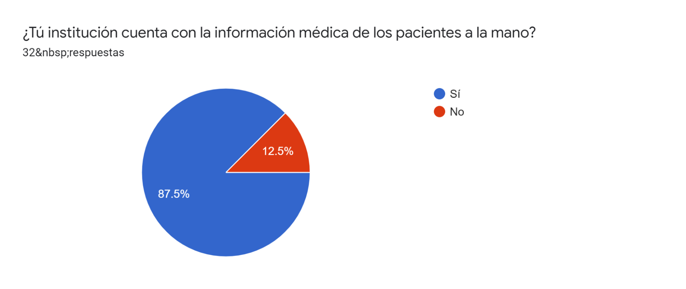
Placeholder
Podemos observar que un 87.5% de los médicos contestaron que sí tienen la información médica de los pacientes con un fácil acceso, sin embargo aún hay un 12.5% que no la tiene lo cual puede ser un problema en caso de una emergencia o cita médica.
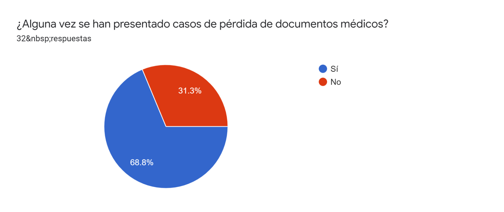
Placeholder
Aquí se puede observar que se obtuvo un 68.8% que han presentado casos de pérdida de documentos médicos. Trayendo como consecuencia la búsqueda de dichos documentos en el archivo del hospital, recabar nuevamente los documentos, reportar a trabajo social y levantar un acta, repetir estudios de laboratorio y reiniciar la conformación de un expediente físico. Lo cual puede ser un proceso tardado y tedioso tanto para el paciente como para el personal médico.
Pacientes
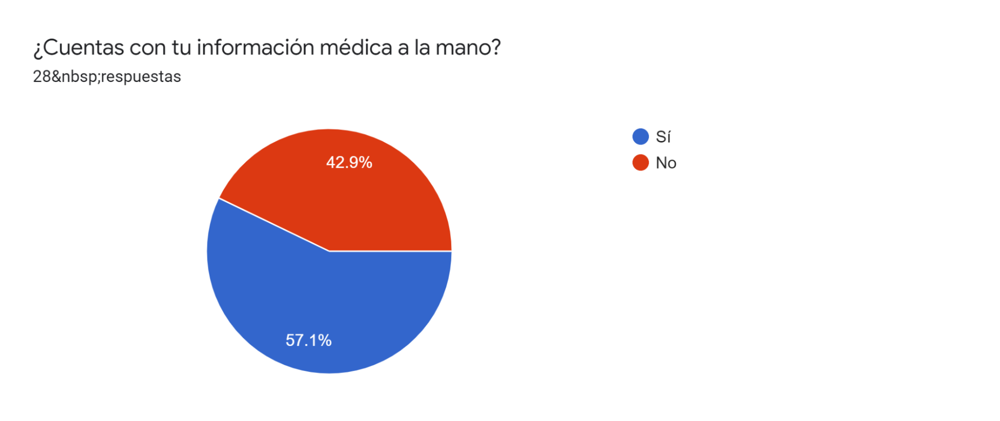
Placeholder
En la gráfica, podemos observar que un 57.1 % de los pacientes sí cuentan con su información médica a la mano; sin embargo el 42.9 % de los pacientes encuestados, no cuentan con su información médica a la mano, lo cual puede ser un problema en situaciones de emergencia o al necesitar los datos ya sea en algún servicio médico institucional o en alguna cita médica.
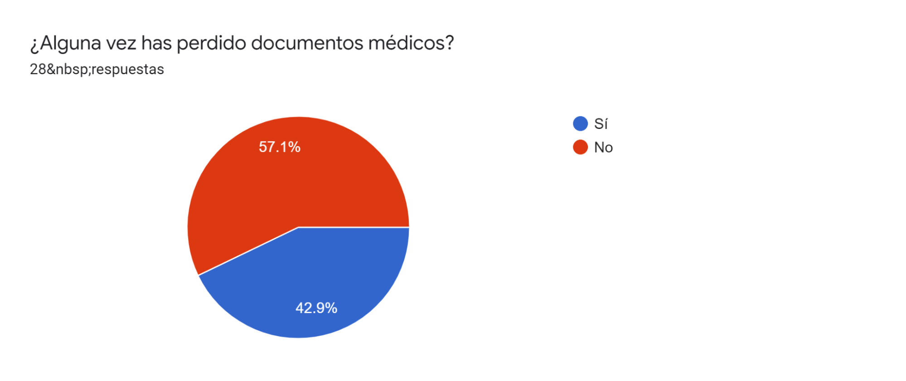
Placeholder
Con respecto a la gráfica, podemos observar que un 57.1 % de los pacientes encuestados no han pérdido documentos médicos. Por otro lado, tenemos que un 42.9 % de los pacientes sí han pérdido documentos médicos, por ende crea un problema si es que se llegarán nuevamente a requerir, teniendo que reportar su pérdida o para tener la información se realizan nuevamente los estudios necesarios.
Por otro lado, de acuerdo con la encuesta rápida sobre información médica odontológica y oculista, se denota que un gran porcentaje de personas han extraviado documentos o desconocen sus datos médicos de importancia; de igual manera se observó la falta de registro digitales en ambas áreas.
Personal Médico Odontólogo
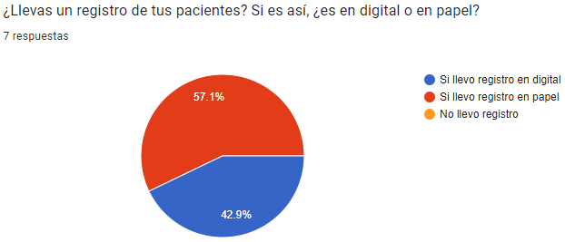
Placeholder
De acuerdo a la encuesta al Personal Médico Odontólogo, todos llevan un registro de sus pacientes. El 42.9% lleva un registro de expediente de forma digital; sin embargo el otro 57.1% lleva un registro de expediente de forma física (en papel).
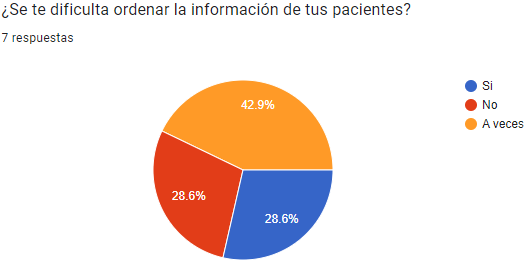
Placeholder
En la gráfica, pudimos observar que al 28.6% no se le dificulta ordenar la información. Sin embargo, al otro 28.6% se le dificulta mientras que al 42.9% restante a veces se le dificulta. Por lo tanto, al crear una aplicación que ayuda a solucionar esto reduciría los porcentajes ayudando así al Personal Médico Odontólogo.
Pacientes de Odontología
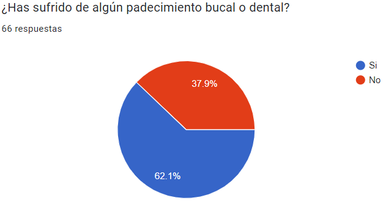
Placeholder
De acuerdo a la gráfica podemos observar que el 62.1% ha sufrido de algún padecimiento, mientras que el otro 37.9% no. Por lo tanto, más del 50% tiene un expediente médico dental, el cual debería contener dicho datos. Sin embargo, no todos los pacientes cuentan con este o solamente lo tienen las instituciones o los dentistas.
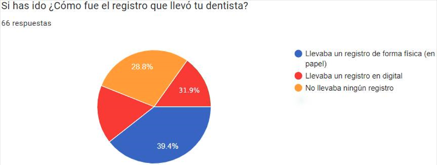
Placeholder
En la gráfica, podemos observar que un 31.9% si llevan un expediente digital. Sin embargo, el 39.4% lleva un expediente físico en general e incluso otro 28.8% no lleva un registro de sus pacientes lo cual es alarmante. Por lo tanto, un total del 68.2% tienen problemas con su información médica, ya sea que al tenerlos en físico por extravío de los mismos o al no tenerlos sería una pérdida total de la información.
Personal Médico Oculista
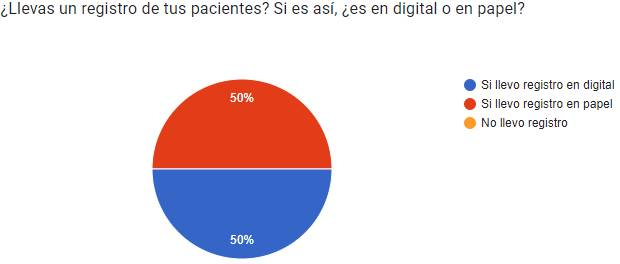
Placeholder
De acuerdo a la encuesta al Personal Médico Oculista, todos llevan un registro de sus pacientes. El 50% lleva un registro de expediente de forma digital; mientras que el otro 50% lleva un registro de expediente de forma física (en papel).
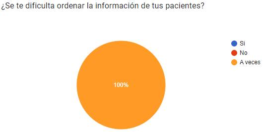
Placeholder
De acuerdo a la gráfica, el 100% de los encuestados a veces se les dificulta ordenar la información de sus pacientes. Por lo tanto, buscamos que este 100% de “a veces” se convierta en un 100% donde al personal médico no se le dificulte ordenar la información.
Pacientes del Oculista
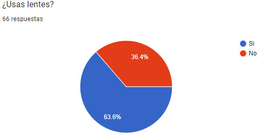
Placeholder
Gracias a la encuesta pudimos identificar que el 63.6% de la población encuestada usa lentes. Mientras que el 36.4% no, lo cual nos ayuda a delimitar que más del 50% ha ido al oculista o debería tener un expediente/registro de su información médica.
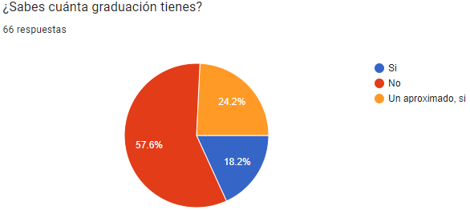
Placeholder
Sin embargo al momento de preguntar si sabían su graduación, el 18.2% si sabe; sin embargo el 57.6% no sabe, lo cual nos indica que el paciente no cuenta con un expediente ocular actualizado a la mano y el otro 24.2% mencionó recordar con inseguridad su graduación pero al no saberse con certeza puede ocasionar problemas a futuro si se pregunta para un procedimiento médico u otra situación.
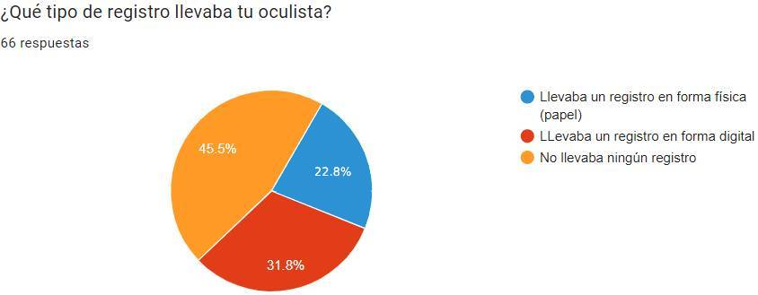
Placeholder
En la gráfica, podemos observar que un 31.8% si llevan un expediente digital. Mientras que el 22.8% lleva un expediente físico; sin embargo, el otro 45.5% no lleva un registro de sus pacientes lo cual es alarmante. Por lo tanto, un total del 68.3% tienen problemas con su información médica ocular, ya sea que al tenerlos en físico por extravío de los mismos o por no tenerlos lo cual sería una pérdida u olvido total de la información.
SOLUCIÓN
“MedicData” se originó a partir del estudio de nuestros alrededores, además de una serie de sucesos particulares que ocurrieron en personas cercanas a los desarrolladores del proyecto.
Es así como llega la idea de crear una aplicación que mantenga segura y accesible la información médica general, oculista y odontológica sobresaliente, es por eso que en todo momento les será posible acceder a ella a través de la aplicación, proporcionando así ayuda tanto a los pacientes como al personal médico correspondiente.
 Placeholder
Placeholder
¿Qué es MedicData?
“MedicData”es una aplicación cuya principal función es salvaguardar la información médica de las personas que hagan uso de nuestra aplicación.
Se ofrecerá un modelo gratuito con funciones importantes para que el uso de la aplicación no sea vea limitado y se implementará un modelo premium con funciones extras que motiven al cliente a adquirir sus beneficios, para que de esta manera se generen ganancias con este proyecto.
 Placeholder
Placeholder
Placeholder content for this accordion, which is intended to demonstrate the .accordion-flush class. This is the first item's accordion body.